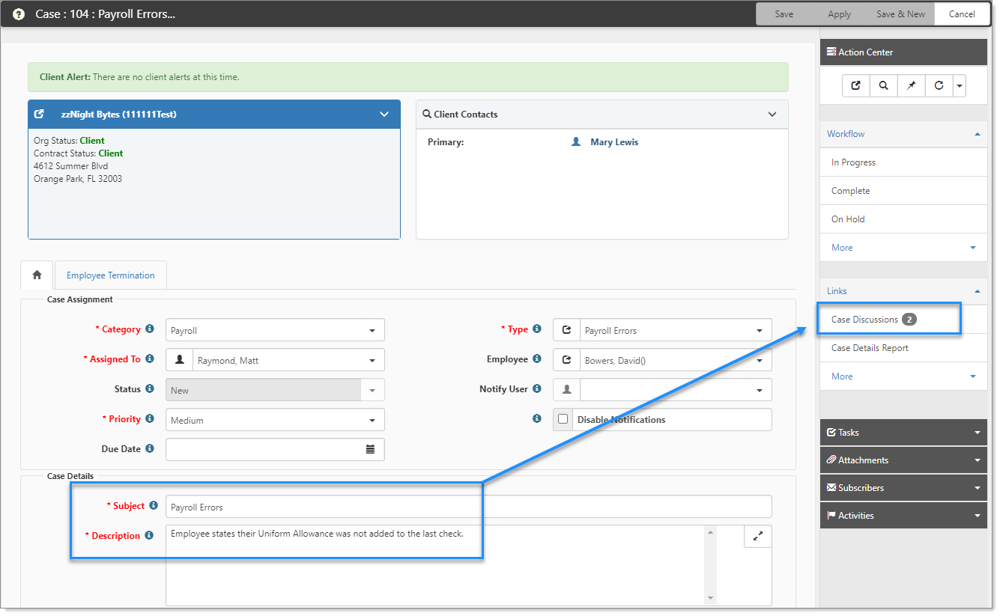

Configuring client service case discussions
supports Client Service Case (CSC) discussions, which are threaded discussions attached to Client Service Cases designed to make communicating with external Case users more fluid. Discussions support specific email templates that provide standard replies to common case types. This chapter includes detailed information about configuring the API record, Email Integration, and the Email Templates to automate and standardize your messages.

Topics in this section